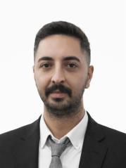

Operasyon ve Depo Yönetimi
Stok kontrolü, sevkiyat planlama, envanter takibi ve ERP üzerinden raporlama.
Yazılım · Medikal operasyon · Teknik destek
Medikal Operasyon ve Teknik Destek Profesyoneli
Cerrahi asistanlık, klinik koordinasyon ve medikal depo yönetiminde 7 yılı aşkın deneyime sahibim. İş hayatımda operasyonel süreçleri düzenli ve izlenebilir şekilde yönetiyor, teknik becerilerimi de kendi geliştirdiğim oyun ve programlarda kullanıyorum.

Sağlık sektöründe sahada edinilmiş deneyim, teknik bakış açısı ve disiplinli çalışma.
2016 yılında Gazi Üniversitesi Ağız ve Diş Sağlığı programından mezun oldum ve kariyerime ağız ve diş sağlığı teknikeri olarak başladım. Özel hastane ve kliniklerde cerrahi işlemler, sedasyon ve anestezi desteği alanlarında görev aldıktan sonra Memorial, Medicana ve Koru gibi kurumlarda implant ve ileri cerrahi operasyonlarda cerrahi asistan olarak çalıştım. Bu süreçte klinik koordinasyon ve tedarik süreçlerini de yürüttüm.
2024–2026 yılları arasında bir medikal ürünler firmasında ambar amiri olarak depo, stok ve sevkiyat operasyonlarını Canias ERP üzerinden yönettim; medikal cihazların bakım, onarım ve arıza tespitini üstlendim. Mart 2026'dan bu yana Medex Sağlık Hizmetleri'nde saha operasyon sorumlusu olarak çalışıyorum. Yeni sistemlere hızlı uyum sağlayan, analitik düşünen ve çözüm odaklı çalışan biriyim.
Stok kontrolü, sevkiyat planlama, envanter takibi ve ERP üzerinden raporlama.
İmplant ve ileri cerrahi asistanlığı, sedasyon desteği, klinik koordinasyon.
Medikal cihaz bakım ve onarımı, elektrik kurulum ve tamir işleri, arıza tespiti.
Oyunlar, telefon ve bilgisayar programları; Unity, C#, Python ve Blender.
Mesleki deneyim, eğitim ve sertifikalar.
Klinik ve cerrahi
Güvenlik ve iletişim
Kişisel ve mesleki gelişim
Kendi geliştirdiğim oyun ve programlar. Her projenin kendi sayfası var; bağlantısını doğrudan gönderebilirsiniz.

Yabancı altyazıyı ve konuşmayı anında Türkçeye çeviren uygulama. Kurulum gerektirmez; dizi, video dosyası ve YouTube'da çalışır.

Ankara'nın tamamında geçen, çevrimdışı, gerçekçi açık dünya sürüş oyunu. Hasar, yakıt, bakım, trafik ve hava durumu sistemleri.

Fotoğraflardan gerçek 3D model üreten, modeli parça parça düzenleyip Unity, Unreal ve Godot'ya aktaran masaüstü uygulaması.